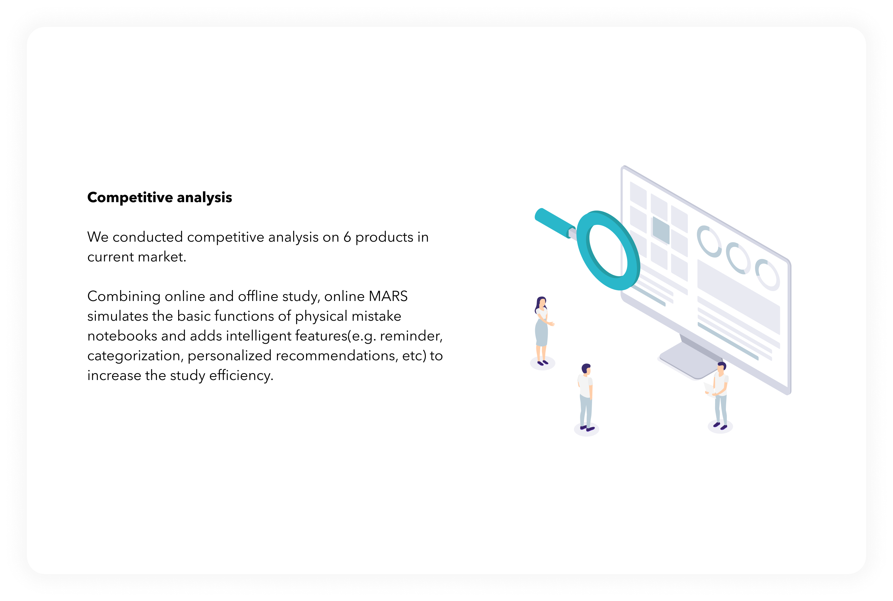
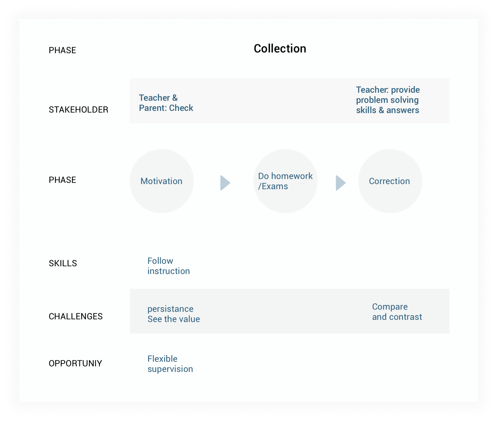

Background
Improve the learning experience of the
mistake analysis system
Our client, Squirrel AI, offers an online
learning platform powered by AI in China. The Squirrel AI online learning
platform has a feature called Mistake Analysis System where the students
can do Mistake Analysis Related Study (MARS) like correcting and
analyzing mistakes and reviewing related knowledge components (KC’s).
Our project aims to improve the learning experience of the Mistake
analysis system.

Guodong Zhao
Jiachen Gong
Yuchen Xie
Miaojun Xu
Product Manager
Development Lead
Design Lead
Project Manager
Problem Space
How Might We help students learn from their
most important mistakes by categorizing, organizing, and analyzing them?
Solution
Star important mistaken questions,
categorize them and annotate them for future review.
The solution we proposed is the Starred Question Set feature to be hosted within the MARS system. Students can star their important mistaken questions, categorize them, and annotate them for future review.
Text & image annotation
Highlight and annotate on important concepts wisely.
Save time for reflection.
Different view modes
Grant adequate freedom when students browse problems
with different purposes.
Teacher feedback incorporation
Provide teacher-student interaction to support
students’ learning both synchronously and asynchronously
Our Approach
Our generative research, including quantitative data analysis, contextual inquiries, semi-structured interviews, enabled us to understand the pain points and needs of our users. Based on our research, we defined our scope and focused our design direction on the mistake analysis system. In our prototyping process, we conducted multiple rounds of interviews and testings to validate the usefulness and usability of our design.
We identified Mistake-Analysis Related Study as our main focus

Research
PRELIMINARY RESEARCH

UNDERSTANDING EXPERT
Interviews with experts reveal the
essential steps and challenges in MARS
Method: semi-structured interviews
with 4 students and 6 learning experts
A typical MARS learning flow for an expert
student

Challenges

Lack of internal &
external motivation
Lack of internal & external motivation
to start and persist doing MARS can easily make MARS a
formality as homework.

Can’t see value of
MARS with limited metacognitive abilities
There are critical needs of metacognitive abilities for selecting, reviewing, and analyzing their mistaken problems to help students see the value of doing MARS.

Limited time and
poor usability in online-offline integration
Time and usability issues of current online-offline integration can be a problem for students to do & review their mistake analysis notebook
UNDERSTANDING USERS
Reduce the frictions and cognitive load for students in doing MARS and help them organize and analyze their mistakes.
The challenges and needs of our student and teacher users point to the potential areas of improvement for the online MARS system
A typical instructional flow for a teacher in Squirrel AI

From our research process, we’ve identified that the biggest opportunity for improvement lies with in the process of MARS. We should reduce the frictions and cognitive load for students in doing MARS with the online learning system and help them organize and analyze their mistakes.
REFRAME THE PROBLEM
How Might We help students learn from
their most important mistakes by categorizing, organizing, and analyzing them?
Ideation
The Starred Question Set can better serve users’ needs and is feasible to implement within the MARS
Based on our HMW statement, we generated
over 40 initial ideas through Brainstorming. We then evaluated those
ideas in a difficulty & importance matrix, speed-dated them with users to get feedback, and finalized our idea based on the results.
Our selected idea: The Starred Problem Set
With the Starred Problem Set, we aim to
help students easily organize and locate their most important mistaken
problems. We also intend to help students analyze their mistaken problems
to deepen their understandings.
The Starred Question Set serves the need that
Students need to learn from their most important mistaken problems and review them efficiently.
Prototyping
Evaluate Features around Starred Problem Set
During the first round of the user testing,
we interviewed 7 students to identify whether the feature will serve their
needs and also solicit their feedback to refine the details of our ideas.
Prioritize the features that
Help students to categorize
and organize the problems by tagging them
Enable students to make
annotations in a way that mimics the offline situation and also take
advantage of intelligent tools to save their time.
Assist students to review
the most important problems and seek help from the professors.
Evidence From User Testings
"
"
"
I like the professors’ annotation feature which help me to
deepen the understanding of the certain concepts.
If time is tight, I can skip difficult questions with the filter feature. Do the key questions first.
Practice relevant problems will deepen my understanding of the certain knowledge components.
Iterate on the features to enable
students to categorize, organize and annotate problems more efficiently
1
Enable students to make annotations in a way that mimics the offline situation and to take advantage of intelligent tools to save their time.
We did user testings to understand students’ habits of making the annotations, what tools they will choose and what will they prioritize. Based on our findings, we designed the toolbox that will enable them to make annotations efficiently.
2
Speed up annotation by taking advantages of online tool while maintaining offline characteristics
During their annotation process, students
may want to take a closer examination of the definitions and the formulas
of certain knowledge components. They need a convenient and efficient way
to help them quickly acquire the information they need. so we designed
this auto-fill feature to satisfy their needs.
3
Incorporate student-teacher interaction to the maximum extent without adding too much workload to teachers
Based on our interviews with students and teachers, we found that it’s essential to enable teachers to easily assist students to deepen their understanding of certain concepts and knowledge components and the starred problem set can also serve as a tool for the communication between professors and students. During the iteration, we add several features to satisfy this need.
Iterate to reduce frictions in user flow
1
Improve the efficiency of the reviewing process
2
Reducing redundant steps to streamline printing flow
Based on our user testing, we found that our users will select the problems that they want to print at one time instead of putting the problem into the printing list when reviewing the problems. So we iterated on the printing flow to allow users to choose the problems that they want to print in a separate page.
3
Reducing redundant steps to streamline printing flow
Based on our user testing, we found that it’s essential to help students form the habits of making the annotation for later review. Thus, we allow students to go through the annotation flow before adding the problems to the starred problem set.
4
Adding on-boarding prompts to improve feature discovery and usage
Based on our user testing, we
found that users may have difficulties in discovering the features we
have during the annotation process
We add onboarding prompts to inform users about the features such as
auto-fill and leave message for the professors.
We also added hints to the
picture-editing feature, to make the functionalities more explicit
Measuring Success